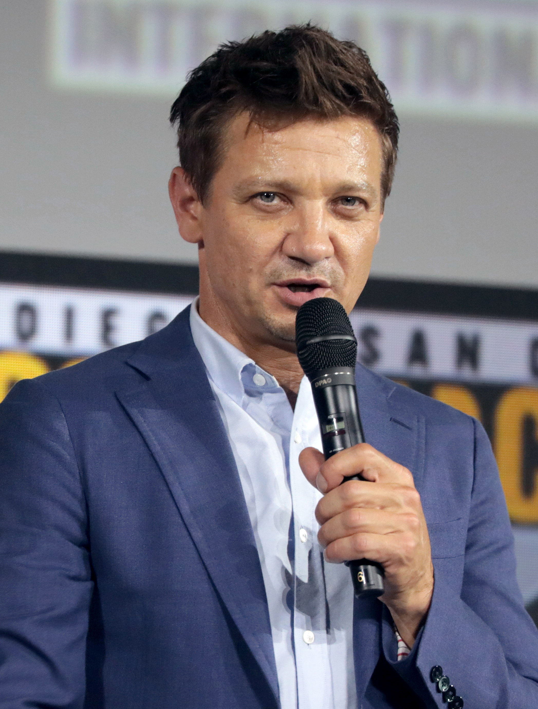
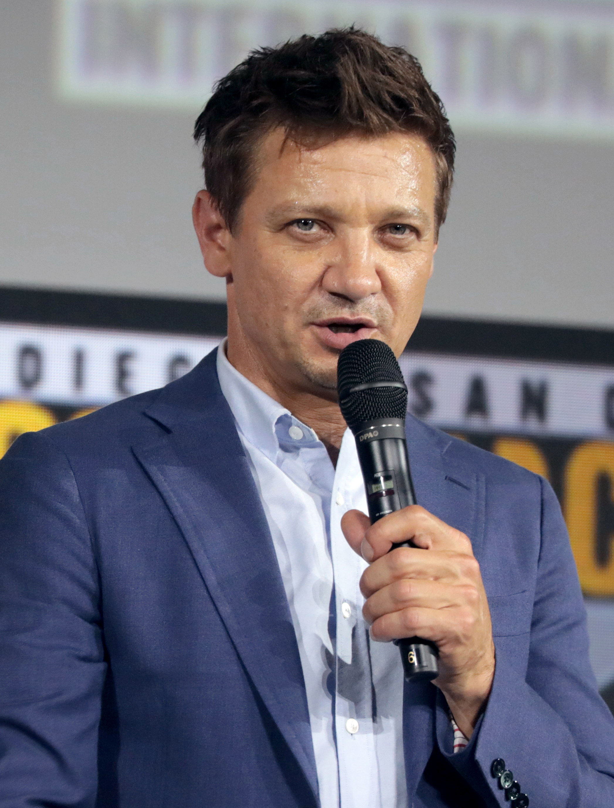

Avengers: Endgame (2019)

Avengers: Endgame (bra: Vingadores: Ultimato; prt: Avengers: Endgame) é um filme de super-herói americano de 2019, baseado na equipe Vingadores da Marvel Comics. Produzido pela Marvel Studios e distribuído pela Walt Disney Studios Motion Pictures, é a sequência direta de Avengers: Infinity War (2018) e o vigésimo segundo filme do Universo Cinematográfico Marvel (UCM). Dirigido pelos Irmãos Russo e escrito por Christopher Markus e Stephen McFeely, o filme apresenta um ensemble cast, composto por Robert Downey Jr., Chris Evans, Mark Ruffalo, Chris Hemsworth, Scarlett Johansson, Jeremy Renner, Don Cheadle, Paul Rudd, Brie Larson, Karen Gillan, Danai Gurira, Benedict Wong, Jon Favreau, Bradley Cooper, Gwyneth Paltrow e Josh Brolin. No filme, os membros sobreviventes dos Vingadores e seus aliados trabalham para reverter os danos causados por Thanos em Infinity War.
O filme foi anunciado em outubro de 2014 sob o título Avengers: Infinity War - Part 2, mas a Marvel posteriormente o renomeou. Os irmãos Russos se juntaram como diretores em abril de 2015, com Markus e McFeely assinando para escrever o roteiro no mês seguinte. A obra serve como uma conclusão para a trama do UCM até aquele momento, encerrando os arcos de história para diversos personagens principais. Seu enredo revisita vários momentos de filmes anteriores, trazendo de volta atores e cenários de toda a franquia. As filmagens começaram em agosto de 2017 no Pinewood Atlanta Studios no Condado de Fayette, Geórgia, e terminaram em janeiro de 2018, com suas gravações sendo realizadas consecutivamente com Infinity War. Filmagens adicionais ocorreram nas regiões metropolitanas de Atlanta, Downtown Atlanta, estado de Nova Iorque, Escócia e Inglaterra. O título oficial foi revelado em dezembro de 2018. Com um orçamento estimado de 356-400 milhões de dólares, é um dos filmes mais caros já produzidos.
Avengers: Endgame estreou em Los Angeles em 22 de abril de 2019, e foi lançado nos Estados Unidos em 26 de abril, como parte da Fase Três do UCM; no Brasil e em Portugal, a estreia aconteceu em 25 de abril. O filme foi altamente elogiado pela crítica especializada, que destacou a sua direção, trilha sonora, performances, sequências de ação, efeitos visuais e peso emocional, e enfatizou o seu ponto culminante da história de vinte e dois filmes. Arrecadou aproximadamente 2,798 bilhões de dólares em todo o mundo, superando toda a receita de Infinity War em apenas onze dias e quebrando vários recordes de bilheteria, tornando-se, inclusive, o filme de maior bilheteria de todos os tempos no período de julho de 2019 a março de 2021. A obra recebeu múltiplos prêmios e indicações, incluindo em categorias de melhores efeitos visuais no 25.º Critics' Choice Movie Awards (a qual venceu), Óscar 2020 e BAFTA 2020. Duas sequências, Avengers: The Kang Dynasty e Avengers: Secret Wars, estão em desenvolvimento e previstas para serem lançadas em 2025.
Enredo
Em 2018, 23 dias após Thanos ter matado metade de toda a vida no universo, Carol Danvers resgata Tony Stark e Nebulosa do espaço, depois eles se reúnem com os Vingadores restantes — Bruce Banner, Steve Rogers, Thor, Natasha Romanoff e James Rhodes — e Rocket na Terra. Localizando Thanos em um planeta desabitado, eles planejam usar as Joias do Infinito para reverter suas ações, mas descobrem que Thanos já as destruiu a fim de impedir que fossem usadas novamente. Enfurecido, Thor decapita Thanos.
Cinco anos depois, em 2023, Scott Lang escapa do Reino Quântico. Chegando ao Complexo dos Vingadores, ele explica que passou apenas cinco horas preso. Teorizando que o Reino Quântico permite viajar no tempo, eles pedem a ajuda de Stark para recuperar as Joias no passado a fim de reverter as ações de Thanos no presente. Stark, Rocket e Banner — este último que, desde então, fundiu sua inteligência com a força do Hulk — constroem uma máquina do tempo. Banner observa que alterar o passado não afeta o presente; quaisquer mudanças criam realidades alternativas. Banner e Rocket viajam para a Noruega, onde visitam o assentamento de refugiados asgardianos em Nova Asgard e recrutam um Thor obeso e desanimado. Em Tóquio, Romanoff recruta Clint Barton, que se tornou um justiceiro após a morte de sua família.
Banner, Lang, Rogers e Stark viajam no tempo para Nova Iorque durante o ataque de Loki em 2012. No Sanctum Sanctorum, Banner convence a Anciã a lhe dar a Joia do Tempo, depois de prometer devolver as múltiplas Joias aos seus devidos pontos no tempo. Na Torre Stark, Rogers recupera a Joia da Mente dos agentes adormecidos da Hidra após batalhar consigo mesmo de 2012, mas a tentativa de Stark e Lang de roubar a Joia do Espaço falha, permitindo que uma variante de 2012 de Loki escape com ela. Rogers e Stark viajam para Camp Lehigh em 1970, onde Stark obtém uma versão anterior da Joia do Espaço e encontra seu pai, Howard. Rogers rouba Partículas Pym de Hank Pym para retornar ao presente e espia seu amor perdido, Peggy Carter.
Enquanto isso, Rocket e Thor viajam para Asgard em 2013; Rocket extrai a Joia da Realidade de Jane Foster, enquanto Thor recebe incentivo de sua mãe, Frigga, e recupera seu antigo martelo, Mjolnir. Barton, Romanoff, Nebulosa e Rhodes viajam para 2014; Nebulosa e Rhodes vão para Morag e roubam a Joia do Poder antes que Peter Quill pudesse roubá-la, enquanto que Barton e Romanoff viajam para Vormir. O guardião da Joia da Alma, Caveira Vermelha, revela que ela só pode ser adquirida sacrificando um ente querido. Romanoff se sacrifica, permitindo que Barton pegue a Joia. Rhodes e Nebulosa tentam retornar ao seu próprio tempo, mas Nebulosa fica incapacitada quando seus implantes cibernéticos se conectam com o seu eu do passado, permitindo que uma variante de 2014 de Thanos descubra sobre o sucesso de seu eu do futuro e a tentativa dos Vingadores de impedi-lo. Thanos envia Nebulosa de 2014 de volta para os Vingadores, no lugar de sua versão futura, a tempo de se preparar para sua chegada.
Reunindo-se no presente, os Vingadores colocam as Joias em uma manopla que Stark, Banner e Rocket construíram. Banner, tendo a maior resistência à sua radiação, empunha a manopla e reverte as desintegrações de Thanos. Enquanto isso, Nebulosa de 2014, personificando sua versão do futuro, usa a máquina do tempo para transportar Thanos de 2014 e sua nave de guerra para o presente, que ele usa para destruir o Complexo dos Vingadores. A Nebulosa atual convence Gamora de 2014 a se rebelar contra Thanos, mas não consegue convencer a Nebulosa de 2014 e a mata. Thanos domina Stark, Thor e um Rogers que conseguiu empunhar o Mjolnir, e convoca seu exército para recuperar as Joias, com a intenção de usá-las para destruir o universo e criar um novo. Stephen Strange, após ser ressuscitado, teleporta os outros Vingadores que foram restaurados, junto dos Guardiões da Galáxia, exércitos de Magos, Wakanda, Saqueadores e Asgard para lutarem contra o exército de Thanos. Danvers também chega e destrói a nave de guerra de Thanos, mas este a domina e empunha a manopla. Stark obtém as Joias e as usa para desintegrar Thanos e seu exército, mas a tensão de usá-las o mata.
Após o funeral de Stark, Thor nomeia Valquíria como a nova governante de Nova Asgard e se junta aos Guardiões. Rogers usa a máquina do tempo mais uma vez para colocar as joias e o Mjolnir às suas próprias linhas temporais e permanece no passado para viver com Carter. No presente, um Rogers idoso passa seu escudo para Sam Wilson.
Elenco
.jpg)
.jpg)
.jpg) 

- Robert Downey Jr. como Tony Stark / Homem de Ferro:
O líder e benfeitor dos Vingadores, que se autodescreve como gênio, bilionário, playboy e filantropo, que usa trajes eletromecânicos de sua própria criação. De acordo com os diretores Joe e Anthony Russo, Downey foi o único ator que recebeu o roteiro completo do filme. Os roteiristas Christopher Markus e Stephen McFelly sabiam que a morte de Stark era inevitável tanto como um "[movimento] para o altruísmo" quanto como um fim para o "capítulo" que Stark iniciou. Eles sentiram que sua morte foi merecida depois de lhe conceder "a aposentadoria perfeita", acrescentando: "Essa é a vida pela qual ele estava lutando [...] Ele se casou, teve uma filha, foi ótimo. Foi uma boa morte. Não pareceu uma tragédia. Pareceu uma vida heroica e finalizada." Joe Russo explicou que Stark "sempre soube que iria morrer porque nunca poderia reconciliar essa noção em si de não proteger o universo", e acrescentou que o personagem foi o mais desafiador entre os Vingadores, já que ele "é o mais formidável de todos eles [...] por causa de seu coração." Os Russos buscaram a aprovação de Downey para o fim do arco narrativo de Stark, que eles desenvolveram desde Captain America: Civil War (2016). - Chris Evans como Steve Rogers / Capitão América:
Também líder dos Vingadores e um veterano da Segunda Guerra Mundial, que foi aprimorado fisicamente através de um soro experimental e congelado até acordar no mundo moderno. Markus descreveu Rogers como alguém que está "se movendo em direção a algum tipo de interesse próprio esclarecido". Tanto ele como McFeely sabiam que ele iria receber "a dança" que prometeu a Peggy Carter em Captain America: The First Avenger (2011), com McFeely dizendo: "Ele adiou uma vida inteira para cumprir seu dever. É por isso que eu não acho que devíamos matá-lo. Porque esse não é o arco [da história de Rogers]. O arco é: 'eu finalmente ponho meu escudo no chão porque eu mereço isso'." Patrick Gorman interpreta um Rogers idoso. - Mark Ruffalo como Bruce Banner / Hulk:
Um Vingador e cientista genial, que por causa de uma exposição à radiação gama, possui uma força aprimorada e aparência monstruosa. Neste filme, Banner conseguiu equilibrar seus dois lados com a experimentação gama, permitindo-lhe combinar sua inteligência com a força e a estatura física do Hulk, baseada na identidade nos quadrinhos do "Professor Hulk". Comparado a outros heróis, que ficaram desmotivados com a derrota contra Thanos, Banner foi o único personagem que permaneceu esperançoso, com Anthony Russo explicando: "Banner é o único personagem que está realmente forjando um novo futuro brilhante, tentando construir algo totalmente novo e encontrar algo completamente novo [...] Banner é aquele que é mais heroico no sentido de que ele mantém sua vontade de continuar tentando." Isso conclui um arco do personagem que foi estabelecido em Thor: Ragnarok (2017) e continuou em Avengers: Infinity War. - Chris Hemsworth como Thor:
Um Vingador e rei de Nova Asgard, baseado na divindade da mitologia nórdica de mesmo nome. Thor agora possui um machado místico, conhecido como Rompe-Tormentas, após a destruição de seu martelo Mjolnir em Thor: Ragnarok. No filme, Thor tornou-se um soberano bêbado e obeso que reside junto com os refugiados de Asgard em Tønsberg, Noruega. Referindo-se a essa drástica mudança de personagem, Hemsworth disse: "Eu só tinha uma opinião. Eu queria fazer algo diferente desta vez", e acrescentou: "Filmamos por muitas horas e dias e discutimos até que ponto poderíamos ir com Thor e o que conseguiríamos fazer de diferente." Anthony Russo acrescentou: "Mesmo que haja muita diversão no filme por conta de sua condição física, não é uma piada. É uma manifestação de onde ele está em um nível de personagem, e achamos que é um dos aspectos mais relacionáveis dele. Quero dizer, é um tipo muito comum de resposta à depressão e à dor." A história de Thor foi seu arco favorito, dizendo: "Parte da magia de Chris como um ator cômico é a sua dedicação à profundidade do personagem em um nível muito sério [...] É tão tortuoso e subversivo quando a comédia está chegando de um lugar de completo compromisso e complexidade emocional." Hemsworth passou cerca de três horas de trabalhos de cabelo e maquiagem para a transformação, que também exigia que ele usasse um grande traje protético de silicone; ele foi chamado de "Thor Lebowski" nos sets de filmagens. Inicialmente, Thor deveria voltar ao seu "velho eu esculpido" no meio de Endgame, mas Hemsworth argumentou com sucesso a favor de manter o novo corpo do personagem. - Scarlett Johansson como Natasha Romanoff / Viúva Negra:
Uma espiã russa altamente treinada, Vingadora e ex-agente da organização S.H.I.E.L.D. No início do filme, Romanoff continua a comandar várias equipes de toda a galáxia na sede dos Vingadores, que Joe Russo explicou que foi fruto de sua incapacidade de seguir em frente e de parar Thanos, dizendo: "ela está fazendo tudo o que pode para tentar manter a humanidade unida [...] Ela ainda é uma vigilante na muralha." Sobre a decisão de Romanoff de se sacrificar para Barton poder adquirir a Joia da Alma a fim de trazer todos de volta, Joe Russo afirmou que era parte de um tema maior que explora o desejo do sacrifício, comparado ao desejo de proteção em Infinity War; ele disse: "Quando ela chega àquela cena [da Joia da Alma], eu acho que ela entende que a única maneira de trazer a humanidade de volta é ela se sacrificando". McFeely declarou: "Sua jornada, em nossas mentes, chegaria ao fim se ela pudesse trazer os Vingadores de volta. Ela vem de um passado tão abusivo e terrível de controle mental, então quando ela chega a Vormir e tem a chance de ter a sua família de volta, é uma coisa pela qual ela trocaria." Para se preparar para o filme, Johansson passou por um regime de treino de alta intensidade, que incluía exercícios pliométricos, levantamento de peso olímpico e ginástica, bem como uma dieta alimentar com restrição de tempo, tudo sob a supervisão de seu treinador de longa data, Eric Johnson, com quem trabalhou desde Iron Man 2 (2010) — o filme que introduziu sua personagem. - Jeremy Renner como Clint Barton / Gavião Arqueiro:
Um mestre arqueiro, Vingador e ex-agente da S.H.I.E.L.D., que se tornou um vigilante conhecido como Ronin, após o desaparecimento de sua família. McFeely descreveu a virada sombria de Barton como "um bom exemplo de pessoas que tiveram histórias muito mais fortes depois do estalo." O filme é iniciado friamente, mostrando a desintegração da família de Barton, na qual inicialmente deveria estar em Infinity War após o estalo de Thanos; no entanto, foi movida para Endgame, com Markus explicando que "iria atenuar a brutalidade do que [Thanos] fez". Joe Russo sentiu que era "uma cena muito trágica para abrir o filme. É uma das poucas cenas no filme que realmente me faz chorar quando eu assisto, porque eu penso na minha própria família [...] E então você pensa sobre o que aconteceria com você, como pai. Você se tornaria muito autodestrutivo." - Don Cheadle como James Rhodes / Máquina de Combate:
Um ex-oficial da Força Aérea dos Estados Unidos e Vingador, que opera a armadura do Máquina de Combate. Cheadle descreveu o novo pertencimento de Rhodes como um Vingador como "não tanto com um pé nas forças armadas. Ele é muito mais do lado dos Vingadores do que era antes". Isso se reflete na visão de mundo mais instintiva e realista de Rhodes no meio do encontro com o fantástico, com Cheadle explicando: "Ele definitivamente tem uma atitude de 'o que está acontecendo' mais do que talvez o resto deles, dado seu histórico. Mas é uma prova de fogo, e ele se adaptou rapidamente ao que [a ameaça] é, ao invés do que ele gostaria que fosse." - Paul Rudd como Scott Lang / Homem-Formiga:
Um Vingador e ex-presidiário, que adquiriu um traje que lhe permite diminuir seu tamanho, mas aumentar sua força e comandar formigas telepaticamente. Lang é retratado pelos gêmeos Bazlo e Loen LeClair quando bebê, por Jackson A. Dunn aos 12 anos, e Lee Moore aos 93 anos. Este foi o último filme de Moore antes de sua morte em agosto de 2018. Markus explicou que a acrescentação de Lang no elenco ajudou a implementar a viagem no tempo no filme, dizendo: "nós tivemos acesso a ele em seu segundo filme, e o fato de que ele estava trazendo todo um subconjunto de tecnologia que tinha algo a ver com um conceito diferente de tempo era como um presente de aniversário." - Brie Larson como Carol Danvers / Capitã Marvel:
Uma ex-pilota da Força Aérea dos Estados Unidos, que ganhou habilidades sobre-humanas ao ser exposta à explosão de um motor de aceleração abastecido pela energia do Tesseract. Markus afirmou que os poderes de Danvers estão em uma escala que não existia anteriormente no UCM e comparou sua personalidade com a de Rogers, "que é uma espécie de pessoa que está certa e, sabe, eles estão certos, e realmente não querem ouvir quando você lhes diz que estão errados." Danvers tem pouco tempo de tela no filme, com McFeely argumentando que "não é a história que estamos tentando contar — são os Vingadores originais lidando com a perda e chegando a uma conclusão, e ela é o sangue novo e fresco". Larson filmou suas cenas para Endgame antes de começar a trabalhar em seu filme solo, Captain Marvel (2019), que foi lançado primeiro. Os diretores de Captain Marvel, Anna Boden e Ryan Fleck, estiveram presentes nas filmagens das cenas de Danvers em Endgame, e deram suas bênçãos à caracterização da personagem no filme. - Karen Gillan como Nebulosa:
Um membro dos Guardiões da Galáxia e filha adotiva de Thanos, que foi criada junta com Gamora como irmãs. Depois de ser previamente apresentada como uma antagonista ou anti-herói em filmes anteriores do UCM, Nebulosa passa por um arco de redenção no filme, onde ela faz as pazes por suas ações passadas, incluindo um encontro com uma versão passada de si mesma, com Gillan acrescentando que ela está "encarando de frente para seu antigo eu e está muito claro o quão longe ela veio daquela pessoa irritada, amarga e distorcida. Ela está começando a se conectar com outras pessoas e encontrar algum nível de perdão." Gillan supôs que Nebulosa iria atuar em um papel de destaque no filme quando percebeu que Infinity War e Endgame seriam adaptados de The Infinity Gauntlet (1991), que ela havia lido anteriormente quando foi escalada pela primeira vez como Nebulosa em Guardians of the Galaxy (2014). Gillan compartilhou várias cenas com Downey no início do filme, e os dois improvisaram a maioria de suas cenas juntos. - Danai Gurira como Okoye:
A general das Dora Milaje, um grupo de mulheres guerreiras de elite. - Benedict Wong como Wong:
Um Mestre das Artes Místicas e aliado de Doutor Estranho. - Jon Favreau como Happy Hogan:
O chefe de segurança das Indústrias Stark, e ex-motorista e amigo de Stark. - Bradley Cooper como Rocket:
Um membro dos Guardiões da Galáxia, caçador de recompensas, mercenário, e mestre de armas e táticas de batalha, baseado em um guaxinim geneticamente modificado. Sean Gunn foi novamente o substituto de Rocket durante as filmagens, com sua atuação e expressões servindo de referência para a movimentação do personagem. A aparição de Rocket no filme continua um arco de história que foi estabelecido pelo diretor e roteirista de Guardians of the Galaxy e produtor executivo de Endgame, James Gunn, nos dois primeiros filmes dos Guardiões da Galáxia, que foi prosseguido em Infinity War e Endgame, e terminará em Guardians of the Galaxy Vol. 3 (2023). - Gwyneth Paltrow como Pepper Potts:
A esposa de Stark, e CEO das Indústrias Stark. Potts usa uma armadura de exoesqueleto energizado armado feito para ela por Stark, baseado na armadura da Resgate. Paltrow disse que esta seria sua última grande aparição no UCM. - Josh Brolin como Thanos:
Um déspota intergalático natural de Titã, que reuniu todas as seis Joias do Infinito com o objetivo de dizimar metade das criaturas vivas do universo. Joe Russo disse que, após Thanos ter sido bem-sucedido em Infinity War, ele agora está "farto. Ele já fez o que queria. Ele está aposentado." Markus e McFeely tiveram um fator dificuldade pós-Infinity War de implementar o personagem, devido ao fato de Thanos já ter possuído todas as Joias do Infinito, até que o produtor executivo Trinh Tran sugerir que matassem Thanos no primeiro ato do filme. Markus explicou que a morte prematura do personagem "reforçou a agenda de Thanos. Ele terminou [...] era como 'Se eu tiver que morrer, posso morrer agora'". Thanos possui menos tempo de tela em Endgame do que em Infinity War, onde ele foi considerado o personagem principal, como explicado por McFeely: "Nós tivemos que nos dar permissão para deixar o vilão no banco de trás um pouco. Eu não acho que alguém na primeira metade do filme esteja dizendo: 'Oh, eu gostaria que houvesse um vilão'. Você está focado na perda e no assalto no tempo, e você acha que é uma espécie de Vingadores contra a natureza." A versão mais nova de Thanos foi apelidada de "Thanos Guerreiro" pelos cineastas. Além de fornecer a voz para o personagem, Brolin realizou a captura de movimento no set. Joe Russo foi um substituto de Thanos em algumas cenas ao lado de Nebulosa.
Diversos atores de Infinity War reprisam seus papéis em Endgame, incluindo Benedict Cumberbatch como Dr. Stephen Strange, Chadwick Boseman como T'Challa / Pantera Negra, Tom Holland como Peter Parker / Homem-Aranha, Zoe Saldana como Gamora, Elizabeth Olsen como Wanda Maximoff, Anthony Mackie como Sam Wilson / Falcão, Sebastian Stan como Bucky Barnes / Soldado Invernal, Tom Hiddleston como Loki, Pom Klementieff como Mantis, Dave Bautista como Drax, o Destruidor, Letitia Wright como Shuri, William Hurt como Thaddeus Ross, Cobie Smulders como Maria Hill, Winston Duke como M'Baku, Tom Vaughan-Lawlor como Fauce de Ébano, Jacob Batalon como Ned, Vin Diesel como Groot, Chris Pratt como Peter Quill / Senhor das Estrelas, Samuel L. Jackson como Nick Fury, Ross Marquand como Caveira Vermelha / Guardião da Joia, Michael James Shaw como Corvus Glaive, Terry Notary como Cull Obsidian e Kerry Condon como a voz original de SEXTA-FEIRA — a inteligência artificial (IA) da armadura de Stark. Monique Ganderton fornece a captura de movimento para Próxima Meia-Noite.
Também reprisam seus papéis em filmes anteriores do UCM: Evangeline Lilly como Hope van Dyne / Vespa, Tessa Thompson como Valquíria, Rene Russo como Frigga, John Slattery como Howard Stark, Tilda Swinton como a Anciã, Hayley Atwell como Peggy Carter, Marisa Tomei como May Parker, Taika Waititi como Korg, Angela Bassett como Ramonda, Michael Douglas como Hank Pym, Michelle Pfeiffer como Janet van Dyne, Linda Cardellini como Laura Barton, Maximiliano Hernández como Jasper Sitwell, Frank Grillo como Brock Rumlow, Robert Redford como Alexander Pierce, Callan Mulvey como Jack Rollins, e Ty Simpkins como Harley Keener. Sean Gunn reprisou seu papel como Kraglin e foi creditado pelo papel, embora seja incerto se a gravação de sua expressão facial foi usada. Natalie Portman aparece como Jane Foster através do uso de uma cena deletada de Thor: The Dark World (2013), e uma nova voz sobre a qual Portman gravou quando Foster aparece falando à distância. James D'Arcy reprisa seu papel como Edwin Jarvis, da série de televisão do UCM Agent Carter, marcando a primeira vez que um personagem introduzido em uma série de televisão do UCM aparece em um filme desta mesma franquia.
Além disso, Hiroyuki Sanada interpreta Akihiko, um chefe da Yakuza que atua em Tóquio e que se opõe a Barton. Lexi Rabe interpreta Morgan Stark, filha de Tony e Pepper. Katherine Langford foi escalada para interpretar uma Morgan mais velha, mas sua cena foi deletada do filme. Emma Fuhrmann interpreta uma Cassie Lang mais velha, filha de Scott, depois que a personagem foi interpretada quando criança por Abby Ryder Fortson em filmes anteriores do UCM. O co-criador dos Vingadores, Stan Lee, faz uma aparição póstuma no filme, aparecendo digitalmente rejuvenescido como um motorista de carro em 1970; esta foi a sua última aparição no cinema. Ken Jeong e Yvette Nicole Brown obtêm aparições especiais como guarda de instalações de um armazenamento e como uma funcionária da S.H.I.E.L.D., respectivamente. O co-diretor Joe Russo (creditado como Gozie Agbo) tem uma aparição como um homem gay lamentando a perda repentina de um ente querido, tratando-se da primeira vez que um personagem abertamente homossexual é retratado em um filme do UCM. As filhas de Joe, Ava e Lia Russo, interpretam a filha de Barton, Lila, e uma fã do Hulk, respectivamente. O criador de Thanos, Jim Starlin, também aparece como um homem enlutado. O personagem Howard, o Pato faz uma aparição sem fala.
Produção

Em outubro de 2014, a Marvel anunciou uma sequência de duas partes de Avengers: Age of Ultron (2015), intitulada Avengers: Infinity War. Part 1 estava programada para ser lançada em 4 de maio de 2018, com Part 2 programada para 3 de maio de 2019. Em abril de 2015, a Marvel anunciou que os irmãos Anthony e Joe Russo dirigiriam ambas as partes de Avengers: Infinity War, com filmagens conjuntas previstas para começarem em 2016. Nesse mesmo mês, o produtor Kevin Feige disse que os filmes foram intitulados como duas partes de um único filme por causa dos elementos compartilhados entre as obras, mas comentou que seriam "dois filmes distintos", não uma história dividida em dois filmes. Em maio de 2015, Christopher Markus e Stephen McFeely assinaram contrato para escrever os roteiros de ambas as partes da produção. Em maio de 2016, os irmãos Russos revelaram que iriam renomear o subtítulo de ambas as partes, para remover ainda mais o equívoco de história dividida. Em julho daquele ano, a Marvel removeu o subtítulo "Infinity War - Part 2", simplesmente referindo-se ao filme como Untitled Avengers film. Feige e os irmãos Russos indicaram que o título estava sendo retido porque revelaria detalhes da trama deste filme e de Infinity War.
As filmagens começaram em 10 de agosto de 2017, sob o título de produção de Mary Lou 2, no Pinewood Atlanta Studios no Condado de Fayette, Geórgia, com Trent Opaloch atuando como diretor de fotografia. O filme, juntamente com Infinity War, foram filmados com o uso de câmeras ARRI Alexa IMAX 2D, marcando assim a primeira vez que um longa-metragem de Hollywood havia sido filmado inteiramente com câmeras digitais IMAX. Nesse mesmo mês, as filmagens ocorreram na área de The Gulch, em Downtown Atlanta, perto da estação Five Points MARTA, e Parque Piedmont. Feige explicou que os filmes foram originalmente programados para serem filmados simultaneamente, mas acabaram sendo filmados consecutivamente, pois "tornou-se muito complicado cruzá-los desta forma, e nos encontramos — novamente, em algo que pagaria o preço. Queríamos poder focar e filmar um filme e depois focar e filmar outro filme." Originalmente, Anthony Russo achou que fazia mais sentido filmar os filmes simultaneamente devido a razões financeiras e logísticas, considerando o grande número de membros do elenco, e sugeriu que em "alguns dias estaremos filmando o primeiro filme e alguns dias estaremos filmando o segundo filme. Apenas pulando para frente e para trás". As cenas de Asgard de 2013 foram filmadas na Catedral de Durham em Durham, Inglaterra, durante a produção de Infinity War no início de maio de 2017. Filmagens também ocorreram em St Abbs, Escócia, cujo se tornou Nova Asgard, Noruega. A produção terminou em 11 de janeiro de 2018, embora filmagens adicionais tenham ocorrido nos condados de Dutchess e Ulster em Nova Iorque, em junho de 2018. As refilmagens começaram em 7 de setembro de 2018 e foram concluídas em 12 de outubro de 2018. Refilmagens adicionais ocorreram em janeiro de 2019. Com um orçamento estimado na faixa dos 356-400 milhões de dólares, é um dos filmes mais caros já feitos. Evans e Hemsworth receberam um pagamento de 15 milhões de dólares por conta do filme.
O título oficial, Avengers: Endgame, e a data final de lançamento nos Estados Unidos de 26 de abril de 2019, foram revelados juntos com o primeiro trailer do filme em dezembro de 2018. Os efeitos visuais foram criados pela Industrial Light & Magic, Weta Digital, DNEG, Framestore, Cinesite, Digital Domain, Rise, Lola VFX, Cantina Creative, Capital T, Technicolor VFX e Territory Studio. Assim como nos filmes anteriores do UCM, a Lola trabalhou nas sequências de rejuvenescimento; o filme apresenta 200 tomadas de envelhecimento e rejuvenescimento. Downey, Evans, Ruffalo, Hemsworth, Johansson e Renner foram rejuvenescidos para suas aparições de 2012 para cenas recriadas de The Avengers (2012). Michael Douglas, John Slattery e Stan Lee também foram rejuvenescidos para as cenas em Nova Jersey de 1970; a aparência de Douglas em The Streets of San Francisco (1972-1977) serviu como base para sua figuração em Endgame. A Lola também envelheceu Evans para a cena final, onde ele é retratado como um homem idoso, usando um pouco de maquiagem e um dublê como referência. Jeffrey Ford e Matthew Schmidt serviram como editores do filme.